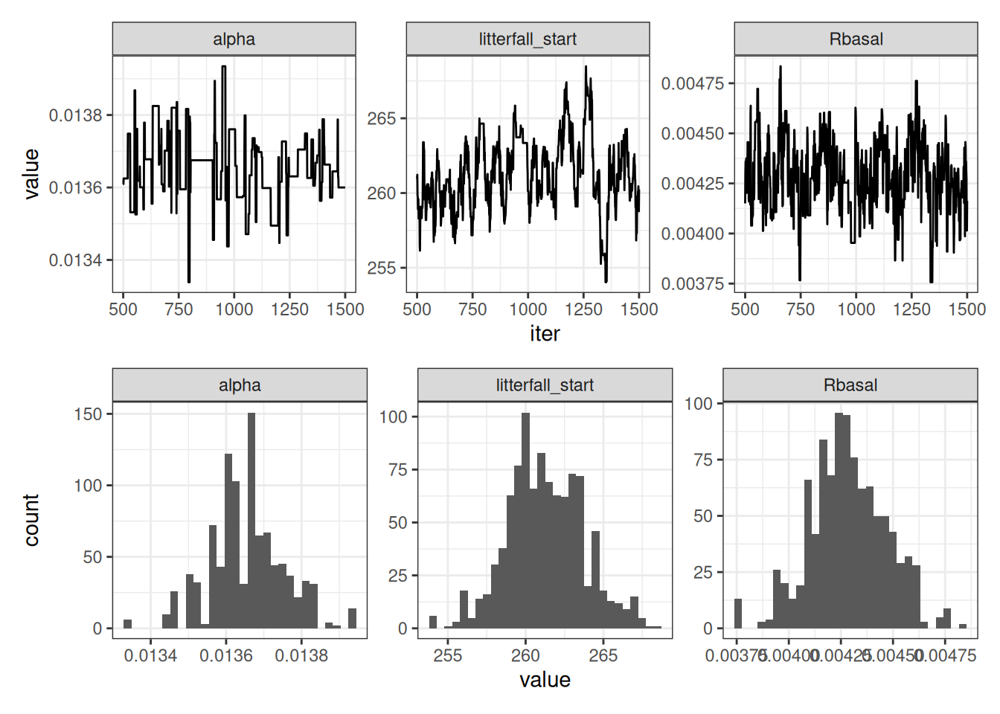
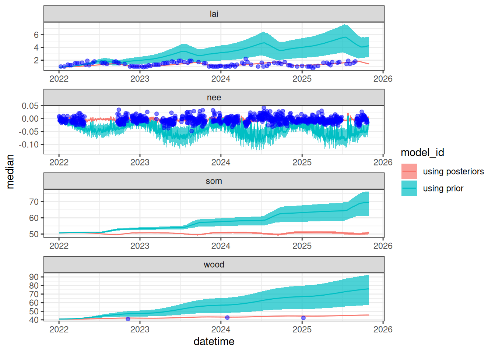

library(tidyverse)
library(patchwork)
source("R/helpers.R")
source("R/forest_model.R")
set.seed(100)19 Applying Bayesian calibration methods to a process model
In Chapter 14, you learned how to estimate parameter values using Bayesian methods. Now, we will apply these methods to estimate parameters in our forest process model from Chapter 16. Recall that the advantage of the Bayesian approach is that it estimates the parameters given the data, whereas likelihood approaches technically estimate the data given the parameters.
19.1 Running MCMC on the forest process model
site <- "OSBS"Read in observations
obs <- read_csv("data/site_carbon_data.csv", show_col_types = FALSE)Set up dates of simulation, parameters, initial conditions, and meteorology inputs
sim_dates <- seq(as_date("2022-01-01"), Sys.Date() - 2, by = "1 day")
ens_members <- 1
params <- list()
params$alpha <- rep(0.02, ens_members)
params$SLA <- rep(4.74, ens_members)
params$leaf_frac <- rep(0.315, ens_members)
params$Ra_frac <- rep(0.5, ens_members)
params$Rbasal <- rep(0.002, ens_members)
params$Q10 <- rep(2.1, ens_members)
params$litterfall_rate <- rep(1/(2.0*365), ens_members) #Two year leaf lifespan
params$litterfall_start <- rep(250, ens_members)
params$litterfall_length<- rep(60, ens_members)
params$mortality <- rep(0.00015, ens_members) #Wood lives about 18 years on average (all trees, branches, roots, course roots)
params$sigma.leaf <- rep(0.0, ens_members) #0.01
params$sigma.wood <- rep(0.0, ens_members) #0.01 ## wood biomass
params$sigma.soil <- rep(0.0, ens_members)# 0.01
params <- as.data.frame(params)
state_init <- rep(NA, 3)
state_init[1] <- obs |>
filter(datetime %in% sim_dates,
variable == "lai") |>
na.omit() |>
slice(1) |>
mutate(observation = observation / (mean(params$SLA) * 0.1)) |>
pull(observation)
state_init[2] <- obs |>
filter(variable == "wood",
datetime %in% sim_dates) |>
na.omit() |>
slice(1) |>
pull(observation)
state_init[3] <- obs |>
filter(variable == "som") |>
na.omit() |>
slice(1) |>
pull(observation)
inputs <- get_historical_met(site = site, sim_dates, use_mean = TRUE)
inputs_ensemble <- assign_met_ensembles(inputs, ens_members)Set up MCMC configuration
#Set MCMC Configuration
num_iter <- 1500
log_likelihood_prior_current <- -10000000000
accept <- 0
#Initialize chain
num_pars <- 3
jump_params <- c(0.001, 0.0002, 1)
fit_params <- array(NA, dim = c(num_pars, num_iter))
fit_params[1, 1] <- params$alpha
fit_params[2, 1] <- params$Rbasal
fit_params[3, 1] <- params$litterfall_start
prior_mean <- c(0.029, 0.002, 200)
prior_sd <- c(0.005, 0.0005, 10)Run MCMC
for(iter in 2:num_iter){
#Loop through parameter value
for(j in 1:num_pars){
proposed_pars <- fit_params[, iter - 1]
proposed_pars[j] <- rnorm(1, mean = fit_params[j, iter - 1], sd = jump_params[j])
log_prior <- dnorm(proposed_pars[1], mean = prior_mean[1], sd = prior_sd[1], log = TRUE) +
dnorm(proposed_pars[2], mean = prior_mean[2], sd = prior_sd[2], log = TRUE) +
dnorm(proposed_pars[3], mean = prior_mean[3], sd = prior_sd[3], log = TRUE)
params$alpha <- proposed_pars[1]
params$Rbasal <- proposed_pars[2]
params$litterfall_start <- proposed_pars[3]
#Set initial conditions
output <- array(NA, dim = c(length(sim_dates), ens_members, 12)) #12 is the number of outputs
output[1, , 1] <- state_init[1]
output[1, , 2] <- state_init[2]
output[1, , 3] <- state_init[3]
for(t in 2:length(sim_dates)){
output[t, , ] <- forest_model(t,
states = matrix(output[t-1 , , 1:3], nrow = ens_members) ,
parms = params,
inputs = matrix(inputs_ensemble[t ,, ], nrow = ens_members))
}
output_df <- output_to_df(output, sim_dates, sim_name = "fitting")
combined_output_obs <- combine_model_obs(output_df,
obs,
variables = c("lai", "wood", "som", "nee"),
sds = c(0.1, 1, 20, 0.01))
log_likelihood <- sum(dnorm(x = combined_output_obs$observation,
mean = combined_output_obs$prediction,
sd = combined_output_obs$sds, log = TRUE))
log_likelihood_prior_proposed <- log_prior + log_likelihood
z <- exp(log_likelihood_prior_proposed - log_likelihood_prior_current)
r <- runif(1, min = 0, max = 1)
if(z > r){
fit_params[j, iter] <- proposed_pars[j]
log_likelihood_prior_current <- log_likelihood_prior_proposed
accept <- accept + 1
}else{
fit_params[j, iter] <- fit_params[j, iter - 1]
log_likelihood_prior_current <- log_likelihood_prior_current #this calculation isn't necessary but is here to show you the logic
}
}
}Examine acceptance rate (goal is 23-45%)
accept / (num_iter * num_pars)[1] 0.2586667Process MCMC chain by removing the first 500 iterations and pivoting to a long format
nburn <- 500
parameter_MCMC <- tibble(iter = nburn:num_iter,
alpha = fit_params[1, nburn:num_iter],
Rbasal = fit_params[2, nburn:num_iter],
litterfall_start = fit_params[3, nburn:num_iter]) %>%
pivot_longer(-iter, values_to = "value", names_to = "parameter")p1 <- ggplot(parameter_MCMC, aes(x = iter, y = value)) +
geom_line() +
facet_wrap(~parameter, scales = "free") +
theme_bw()
p2 <- ggplot(parameter_MCMC, aes(x = value)) +
geom_histogram() +
facet_wrap(~parameter, scales = "free") +
theme_bw()
p1 / p2

19.2 Examining the influence of parameter optimization on model predictions
19.2.1 Simulation with prior parameter distributions
ens_members <- 100
inputs_ensemble <- assign_met_ensembles(inputs, ens_members)
#Set initial conditions
output <- array(NA, dim = c(length(sim_dates), ens_members, 12)) #12 is the number of outputs
output[1, , 1] <- state_init[1]
output[1, , 2] <- state_init[2]
output[1, , 3] <- state_init[3]
params <- list()
params$alpha <- rep(0.02, ens_members)
params$SLA <- rep(4.74, ens_members)
params$leaf_frac <- rep(0.315, ens_members)
params$Ra_frac <- rep(0.5, ens_members)
params$Rbasal <- rep(0.002, ens_members)
params$Q10 <- rep(2.1, ens_members)
params$litterfall_rate <- rep(1/(2.0*365), ens_members) #Two year leaf lifespan
params$litterfall_start <- rep(200, ens_members)
params$litterfall_length<- rep(70, ens_members)
params$mortality <- rep(0.00015, ens_members) #Wood lives about 18 years on average (all trees, branches, roots, course roots)
params$sigma.leaf <- rep(0.0, ens_members) #0.01
params$sigma.wood <- rep(0.0, ens_members) #0.01 ## wood biomass
params$sigma.soil <- rep(0.0, ens_members)# 0.01
params <- as.data.frame(params)
#Replace parameters with prior distribution
params$alpha <- rnorm(ens_members, mean = prior_mean[1], sd = prior_sd[1])
params$Rbasal <- rnorm(ens_members, mean = prior_mean[2], sd = prior_sd[2])
params$litterfall_start <- rnorm(ens_members, mean = prior_mean[3], sd = prior_sd[3])
for(t in 2:length(sim_dates)){
output[t, , ] <- forest_model(t,
states = matrix(output[t-1 , , 1:3], nrow = ens_members) ,
parms = params,
inputs = matrix(inputs_ensemble[t ,, ], nrow = ens_members))
}
output_df_no_optim <- output_to_df(output, sim_dates, sim_name = "using prior")19.2.2 Simulation with posterior parameter distributions
#Set initial conditions
output <- array(NA, dim = c(length(sim_dates), ens_members, 12)) #12 is the number of outputs
output[1, , 1] <- state_init[1]
output[1, , 2] <- state_init[2]
output[1, , 3] <- state_init[3]
# Sample from posterior distributions. Use the same index for each
index <- sample(nburn:num_iter, ens_members, replace = TRUE)
params$alpha <- fit_params[1, index]
params$Rbasal <- fit_params[2, index]
params$litterfall_start <- fit_params[3, index]
for(t in 2:length(sim_dates)){
output[t, , ] <- forest_model(t,
states = matrix(output[t-1 , , 1:3], nrow = ens_members) ,
parms = params,
inputs = matrix(inputs_ensemble[t ,, ], nrow = ens_members))
}
output_df_optim <- output_to_df(output, sim_dates, sim_name = "using posteriors")19.2.3 Visualize the influence of optimization
Figure 19.2 shows a simulation that uses the prior distribution and a simulation that uses the posterior distribution. This highlights the constraint provided by the data on the model predictions.
obs_filtered <- obs |>
filter(datetime > min(output_df_no_optim$datetime))
bind_rows(output_df_no_optim, output_df_optim) |>
summarise(median = median(prediction, na.rm = TRUE),
upper90 = quantile(prediction, 0.95, na.rm = TRUE),
lower90 = quantile(prediction, 0.05, na.rm = TRUE),
.by = c("datetime", "variable", "model_id")) |>
filter(variable %in% c("lai", "wood", "som", "nee")) |>
ggplot(aes(x = datetime)) +
geom_ribbon(aes(ymin = lower90, ymax = upper90, fill = model_id), alpha = 0.7) +
geom_line(aes(y = median, color = model_id)) +
geom_point(data = obs_filtered, aes(x = datetime, y = observation), color = "blue", alpha = 0.5) +
facet_wrap(~variable, scale = "free", ncol = 1) +
theme_bw()

19.2.4 Save posteriors for future use
The calibrated parameter chains will be used in later chapters.
write_csv(parameter_MCMC, "data/saved_parameter_chain.csv")